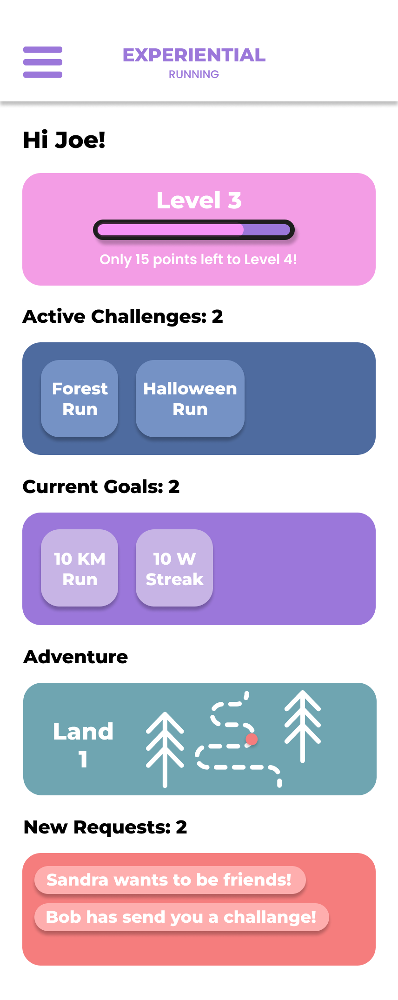

The idea behind the application is to make running fun and challenging. With different game modes such as the ghost or sightseeing run, your run becomes more fun and energizing. Complete challenges for rewards, such as badges and items for your avatar. Follow the challenges in story mode, or choose a random challenge from our library. Feeling up for a challenge? Compete in ranked challenges, gain points, and see your name on global, national and local leaderboards. You can also challenge your friends and see who's faster...
The menu page allow users to navigate the app. The Home button brings the user back to the above mentioned start page. The portrait icon at the top directs users to their profile page, and the icon with two people lets user see their friend list. The pink icon navigates to the leaderboards, and the trophy to, well, trophys. There is a map to access the map view, and a clock to see stats from previous runs. The trail let's users navigate to story mode, where they complete challenges and unlock new worlds.